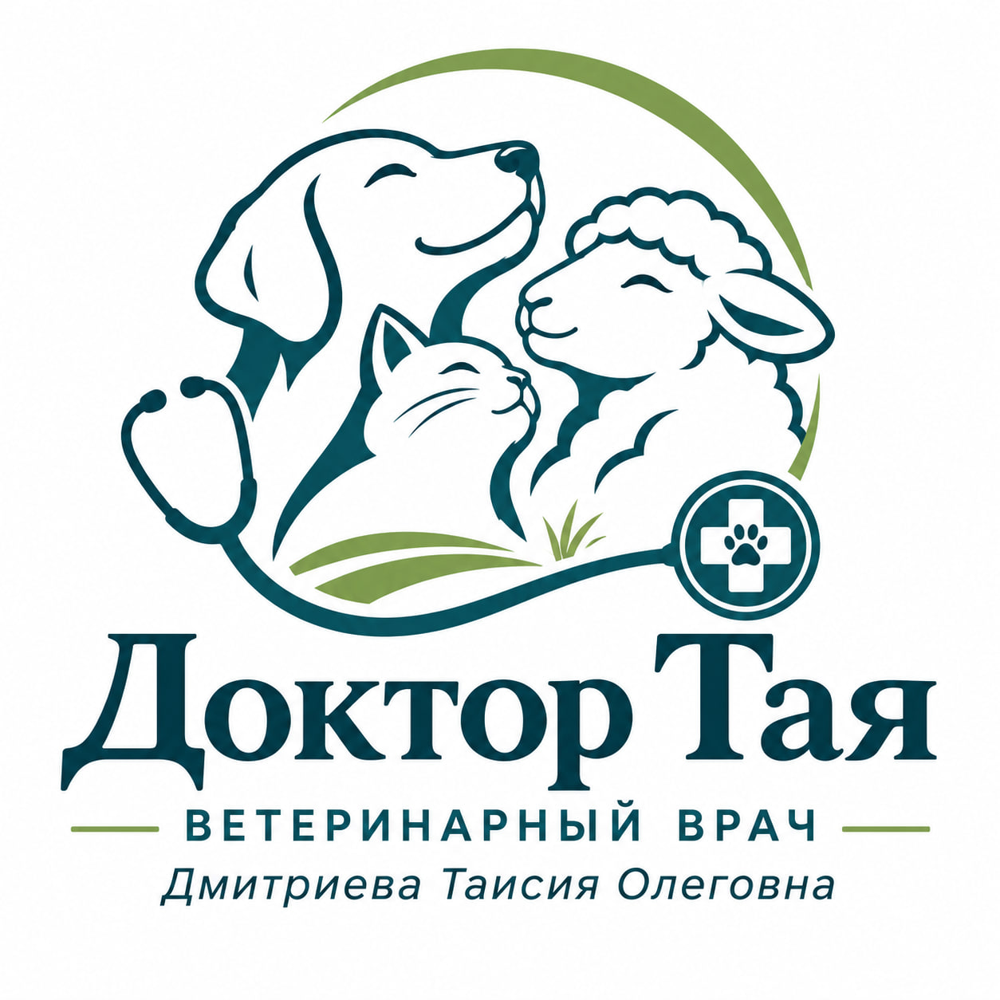

⌖ Очно
Вторник и суббота
Санкт-Петербург,
Загребский бульвар, д. 9

ЗАБОТА С ОПЫТОМ И НАУЧНЫМ ПОДХОДОМ
Кандидат ветеринарных наук,
доктор сельскохозяйственных наук.
20+ лет ветеринарной практики
Позвонить и записаться ↗Терапия · Репродуктология · Гастроэнтерология · Хирургия общей практики
Для собак и кошек, крупного рогатого скота, овец и коз.
Автор онлайн-курсов и лекций для специалистов и владельцев животных.
Вторник и суббота
Санкт-Петербург,
Загребский бульвар, д. 9
Ежедневно
По предварительной записи
через администратора.
QR-код открывает эту страницу
с информацией и контактами.